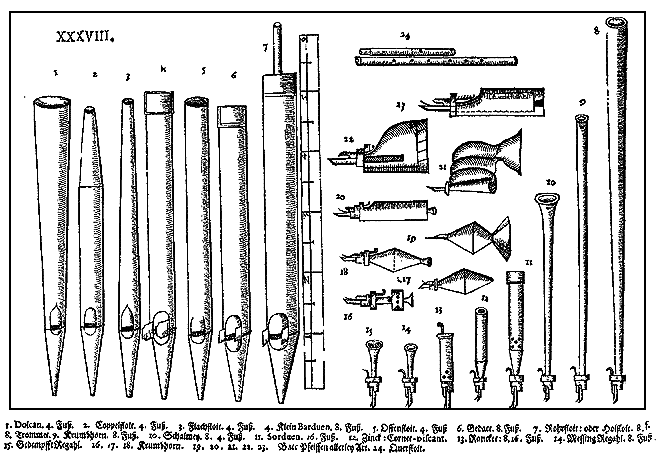

| |
|
|
Píšťaly tvoří hlavní zdroj zvuku varhan. Píšťal se ve varhanách používá mnoho druhů, základní dělení je:
|
Počet píšťal v nástroji je odvislý od počtu rejstříků a počtu tónů (drtivá většina rejstříků má pro každý tón jednu píšťalu, výchvěvné a smíšené hlasy pak dvě až sedm). U malých nástrojů a pozitivů s jedním manuálem se jejich množství pohybuje okolo dvou set, varhany střední velikosti mají zpravidla mezi jedním až cca třemi tisíci píšťal. Největší nástroje obsahují 10 až 30 tisíc píšťal různého tvaru a velikosti. |
Kromě píšťal se ve varhanách můžeme setkat vyjímečně i s jinými zdroji zvuku. Jedním z nich je zvonkohra - (Carillon) - systém kovových laděných tyčinek, které rozeznívají kladívka. Je-li součástí varhan, pak zpravidla jen v horních oktávách (od c1). Někdy je tvořena elektronickým hlasem. Dalším "nedechovým" rejstříkem jsou zvony - výrazný rejstřík tvořený soustavou kovových trubic či destiček (zřídka litými zvony z důvodu nemožnosti ladění) rozeznívaných úderem kladívka. Může mít rozsah celé klaviatury, zpravidla však jen její spodní části. V některých varhanách se objevuje ještě zvonková hvězdice (zimbelstern) - otáčející se hvězdice v prospektu se zvonečky laděnými do akordu. Ve varhanách se od cca poslední čtvrtiny minulého století začínají používat i elektronické (někdy elektrofonické) - hlasy. Jsou to rejstříky bez píšťal, jejichž zvuk je tvořen elektrofonickou cestou (dnes zpravidla digitálně z nasamplovaných - navzorkovaných zvuků skutečných píšťal či zvonů) přes zesilovač a reproduktory. Používá se jako náhrada píšťalových rejstříků tam, kde z nejrůznějších důvodů (nejčastěji prostorových a cenových) nemohou být vystavěny klasicky z píšťal. Jeho použití společně s ostatními "normálními" rejstříky je ale mnohdy problematické (např. nerozlaďuje se vlivy počasí stejně jako píšťalový, takže nástroj jako celek pak vždy zní rozladěně, charakter a barva tónu jsou většinou trochu jiné, než u skutečných píšťal, zvuk se šíří jen z několika míst - od reproduktorů a ne z celé šířky vzdušnice atd.). V píšťalových varhanách se na něj (právem) nahlíží s despektem jako na méněcennou nahrážku. |
Vzhledem
k rozsahu problematiky píšťal a jiných zdrojů zvuku bude tato stránka
doplňována postupně o podrobný popis jednotlivých rejstříků. Zatím se
prosím podívejte na příbuzné stránky z Internetu, které se zabývají touto
tématikou. Bohužel se jedná výhradně o cizojazyčné zdroje (na výběr je
angličtina, francouzština či polština): |
|
|
|
|
|

Poznámka: Tato stránka je součástí Anatomie varhan ®, © Ing. Petr Bernat.